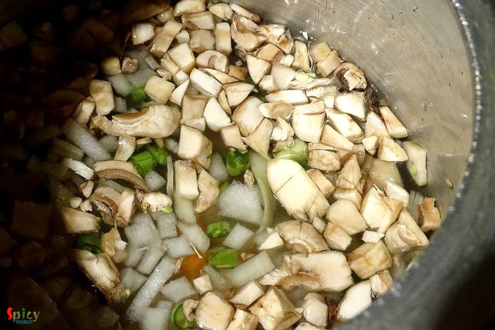
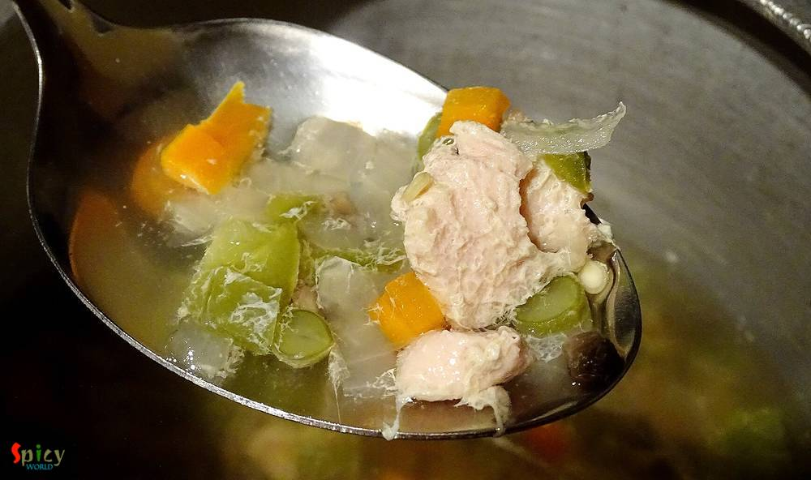
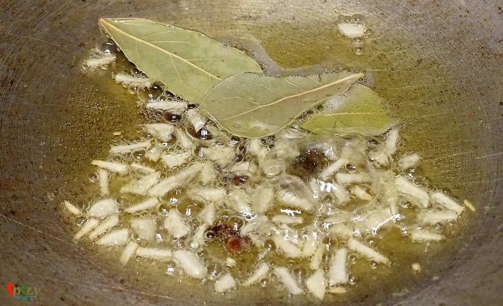
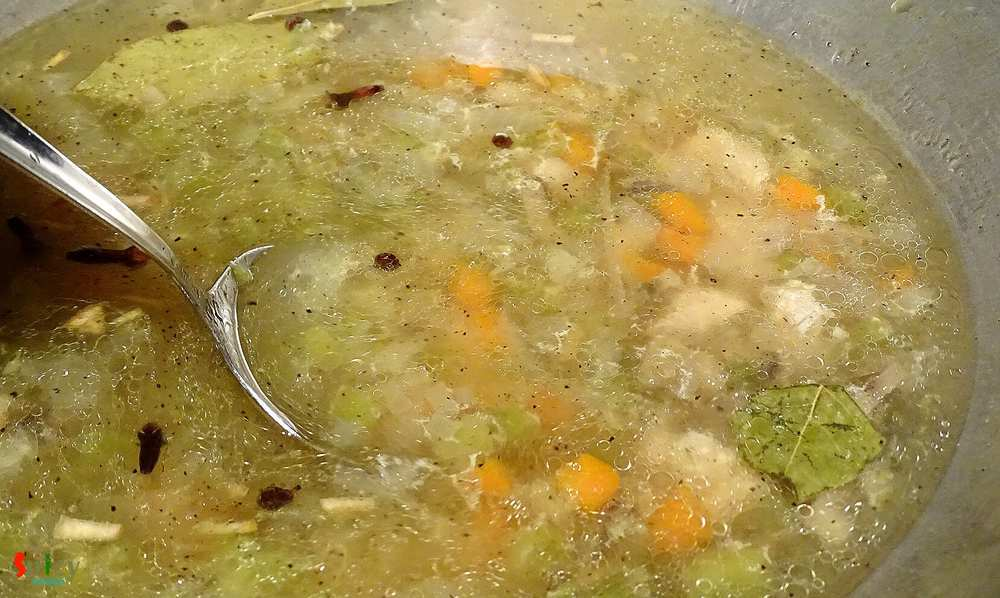
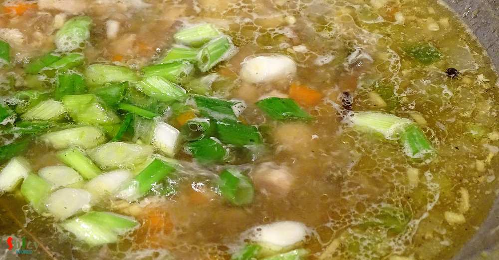

Simple and Easy Recipes
Chicken Soup (Desi Style)
© 2016 Spicy World, Published on: Nov 20, 2015
You know winter is coming and all you need is a bowl of warm soup. You can put many vegetables and protiens in it. Soup is very healthy meal for kids. It is also very helpful for sick people. Specially in winter, you can get many varieties of vegetables from grocery store. Then why not make some soup? This one is a very simple and easy recipe. I mentioned 'desi' style because i used some whole spices (indian) for aroma. Try this in your kitchen and make your winter morning a happy one.
")
Ingredients
- 1 cup of minced chicken.
- 2 cups of mix vegetables like (onion, capsicum, carrots, mushrooms, beans, corn etc.)
- Whole spices (2 bay leaves, 6 black peppercorn, 5 cloves).
- 1 Teaspoon chopped garlic.
- 1 Teaspoon black pepper powder.
- Salt.
- half Teaspoon vinegar.
- Warm water.
- 4 Teaspoons white oil.
- Some chopped spring onion.
")
Steps
Put the chicken, mix vegetables, pinch of salt and a glass of water in a pressure cooker.
Give it pressure for 15-20 minutes. Everything should be cooked well.
Heat oil in a pan.
Add the whole spices and chopped garlic in hot oil. Saute them for 30 secs.
Then add the boiled soup, vinegar, salt and black pepper powder into the oil. Cook this for 10 minutes or until you get desired consistency.
Adjust the salt and heat according to your taste.
Lastly add some chopped spring onion. Cook this for 3 minutes and turn off the heat.
Your Chicken Soup is ready ...
Enjoy this hot with some butter toasted bread ...
 (Final)")